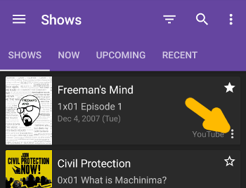

<div class="row"> 
  <div class="col-md-6">
    <h1>Help</h1>

    <p><a class="btn btn-link" href="https://github.com/UweTrottmann/SeriesGuide/edit/gh-pages/help.html"><span class="glyphicon glyphicon-pencil" aria-hidden="true"></span> Improve this page</a></p>
    
    <a href="#howto"><h2>How to</h2></a>
    <ul class="toc">
      <li><a href="#upgrade">Unlock all features</a></li>
      <li><a href="#buttons">Check in, set watched, add to collection and skip</a></li>
      <li><a href="#checkins">How check-ins work</a></li>
      <li><a href="#remove">Remove a show</a></li>
      <li><a href="#hide">Restore a hidden show</a></li>
      <li><a href="#update">Manually update shows</a></li>
      <li><a href="#backup">Backup or restore your data</a></li>
      <li><a href="#autobackup">Restore your data from an Auto-Backup</a></li>
      <li><a href="#language">Change the app language</a></li>
      <li><a href="#sync">Sync with SeriesGuide Cloud or trakt</a></li>
    </ul>
    
    <a href="#fixes"><h2>Fix an issue</h2></a>
    <ul class="toc">
      <li><a href="#translation" >Quality of translations</li>
      <li><a href="#watch">Watch shows or movies</a></li>
      <li><a href="#syncfail">Shows are not updated</a></li>
      <li><a href="#missing">Missing or incorrect information</a></li>
      <li><a href="#airtimes">Wrong air/release times</a></li>
      <li><a href="#sources">Where show, episode and movie data is coming from</a></li>
      <li><a href="#widget">The widget is not updating or is missing</a></li>
      <li><a href="#timezone">After changing the time zone times are incorrect</a></li>
    </ul>
    
    <a href="#trakt"><h2> trakt integration</h2></a>
    <ul class="toc">
      <li><a href="#connecttrakt">Connect to trakt/Troubleshooting</a></li>
      <li><a href="#library">Add shows from your trakt library</a></li>
      <li><a href="#whatissynced">What is synced with trakt</a></li>
    </ul>
    
    <a href="#contact"><h2>Still lost?</h2></a>

    <a name="howto"></a> 
    <div class="spacer"></div>

    <a name="upgrade"></a>
    <h2>How to</h2>

    <h3>Unlock all features</h3>
    <p>Learn more about <a href="/whypay">unlocking all features</a>.</p>

    <a name="buttons"></a>
    <div class="spacer"></div>
  
    <h3>Check in, set watched, add to collection and skip</h3>
    <p>Each episode or movie displays a button bar with up to four actions:</p>
    <p></img></p>
    <ul>
        <li><a href="#checkins"><b>Check in</b> via trakt</a> if you are watching right now. (<strong>Not available</strong> if SeriesGuide Cloud is connected.)</li>
        <li><b>Set watched</b> if you have watched this.</li>
        <li><b>Add to collection</b> if you purchased (DVD, Blu-Ray) or downloaded this.</li>
        <li><b>Skip</b> if you don't want to watch this right now. (Only for episodes, not synced with trakt)</li>
    </ul>
    <p><span class="label label-info">Note</span> On Android you can touch and hold most buttons to show a brief description.</p>
  
    <a name="checkins"></a>
    <div class="spacer"></div>
  
    <h3>How check-ins work</h3>
    <p>Check-in to let friends or the world know what you are watching right now. Checking in requires you to <a href="#trakt">connect SeriesGuide only with trakt</a>.</p>
    <p>After the runtime of the episode or movie has passed, the episode or movie will be set watched on your trakt profile and in SeriesGuide.</p>
    
    <a name="remove"></a>
    <div class="spacer"></div>
    
    <h3>Remove a show</h3>
    <p>To remove a show:</p>
    <ol>
      <li>From the show list, touch <strong>More options</strong> ⋮ of a show.</li>
      <li>Touch <strong>Remove</strong>.</li>
    </ol>
    

    <a name="hide"></a>
    <div class="spacer"></div>

    <h3>Restore a hidden show</h3>
    <p>To restore a hidden show:</p>
    <ol>
      <li>From the show list, touch the funnel-shaped icon <strong>Filter shows</strong>.</li>
      <li>Touch <strong>Remove all filters</strong>.</li>
      <li>Touch the funnel-shaped icon <strong>Filter shows</strong> again, then touch <strong>Hidden</strong>.</li>
      <li>Touch <strong>More options</strong> ⋮ of a show, then touch <strong>Un-Hide</strong>.</li>
      <li>Touch the funnel-shaped icon <strong>Filter shows</strong> again, then touch <strong>Remove all filters</strong>.</li>
    </ol>
    
    <a name="update"></a>
    <div class="spacer"></div>	
    
    <h3>Manually update shows</h3>
    <p>Update a single show:</p>
    <ol>
       <li>From the show list, touch <strong>More options</strong> ⋮ of a show.</li>
       <li>Select <strong>Update</strong>.</li>
    </ol>
    <p>Update all shows:</p>
    <ol>
      <li>From the show list, touch <strong>More options</strong> ⋮.</li>
      <li>Touch <strong>Advanced</strong>.</li>
      <li>Touch <strong>Update (outdated only)</strong> or <strong>Update (all)</strong>.</li>
    </ol>
    
    <a name="backup"></a>
    <div class="spacer"></div>
  
    <h3>Backup or restore your data</h3>
    <p>To backup or restore your shows, lists and movies:</p>
    <ol>
      <li>From the show list, swipe from the left edge to open the navigation drawer.</li>
      <li>Touch <strong>Settings</strong> > <strong>Backup/Restore</strong>.</li>
      <li>Follow the instructions.</p></li>
    </ol>
    <p>On Android 4.4 (KitKat) and up you can choose where the backup files should be stored or which ones to restore from. You might have to enable <strong>Show internal storage</strong> to see all files on your device.</p>
    <p>On older versions, the backup tool will create a <strong>SeriesGuide</strong> folder inside your devices <strong>Download</strong> folder (accessible with a <a href="https://play.google.com/store/search?q=file+manager&amp;c=apps">file manager</a>; the exact path is displayed by the backup tool). There it will store your backup inside of JSON files.</p>
    <p>To restore your backup <strong>on another device</strong>, copy the <strong>SeriesGuide</strong> folder into the <strong>Download</strong> folder of that device (for example email yourself the files or plug your device into a computer). Then use the restore tool in SeriesGuide.</p>
    <p><span class="label label-info">Tip</span> Some users save their backup files to cloud storage. For example Dropbox, Google Drive or OneDrive.</p>

    <a name="autobackup"></a>
    <div class="spacer"></div>
  
    <h3>Restore your data from an Auto-Backup</h3>
    <p>SeriesGuide creates <strong>weekly automatic backups to the "Download/SeriesGuide/AutoBackup"</strong> folder on your device (use a <a href="https://play.google.com/store/search?q=file+manager&amp;c=apps">file manager</a> to view it). You can turn this off or choose custom backup files (Android 4.4 and up) in settings.</p>
    <p>To restore an Auto-Backup:</p>
    <ol>
      <li>From the show list, swipe from the left edge to open the navigation drawer.</li>
      <li>Touch <strong>Settings</strong> > <strong>Auto Backup</strong>.</li>
      <li>Look for the <strong>Restore Auto-Backup</strong> button to restore the last auto-backup.</li>
    </ol>
  
    <a name="language"></a>
    <div class="spacer"></div>
    
    <h3>Change the app language</h3>
    <p>If available, SeriesGuide will use <strong>the language your Android device is set to</strong>. Otherwise it will fall back to English. To change the language of your Android device look in the Android Settings app.</p>
    <p><span class="label label-info">Note</span> All translations come from amazing volunteers who translate on crowdin. Please consider <a href="https://crowdin.com/project/seriesguide-translations/invite">to translate or proof read</a> as well!</p>

    <a name="sync"></a>
    <div class="spacer"></div>

    <h3>Should I connect to SeriesGuide Cloud or trakt?</h3>
    <p>It depends on the devices and apps you use. Keep in mind that <strong>SeriesGuide Cloud is experimental</strong> and requires Google Play Services.</p>
    <dt>SeriesGuide Cloud</dt>
    <dd>You only use SeriesGuide on your devices. You want to sync the favorite and hidden state of shows. You want to sync the skipped state of episodes.</dd>
    <dt>trakt</dt>
    <dd>You use other apps connected to trakt (for example <a href="https://trakt.tv/downloads">apps on iOS or a media center</a>). You use the <a href="https://trakt.tv">trakt website</a>.</dd>
    <br/>
    <p>To connect to either service:</p>
    <ol>
      <li>From the show list, swipe from the left edge to open the navigation drawer.</li>
      <li>Touch <strong>Settings</strong>. Look for the <strong>Services</strong> section. Choose the service you want to connect to.</li>
    </ol>
    <p><span class="label label-info">Note</span> You can be <strong>connected to SeriesGuide Cloud and trakt</strong> at the same time. Setting watched and collected, commenting, rating and more will still be sent to trakt. However, <strong>check-in and sync with trakt will be disabled</strong>. Changes on the trakt website or other apps connected to trakt will not download.</p>
    <p><span class="label label-info">Note</span> <strong>You can always change your mind!</strong> First, disconnect both SeriesGuide Cloud and trakt. Then, sign into only one of them. The data on your device will be merged with the existing data on the service.</p>
  
    <a name="fixes"></a>
    <div class="largespacer"></div>	
    
    <a name="translation"></a></a>
    <h2>Fix an issue</h2>

    <h3>Quality of translations</h3>
    <p>If you found an error in the translation <a href="#contact">drop a message</a>.</p>
    <p>Even better, consider <a href="https://crowdin.com/project/seriesguide-translations/invite">to translate or proof read</a> on crowdin!</p>
    
    <a name="watch"></a>
    <div class="spacer"></div>
    <h3>Watch shows or movies</h3>
    <p>You can <strong>not</strong> watch shows or movies within SeriesGuide.</p>
    <p>However, at the bottom of episode and movie details screens you can add <a href="/api">extensions</a> which allow you to search on popular services for streaming or purchasing content.</p>

    <a name="syncfail"></a>
    <div class="spacer"></div> 

    <h3>Shows or episodes are not updated regularly</h3>
    <p>Make sure <strong>Turn on Auto Update</strong> is enabled in SeriesGuide settings (swipe from the left edge, touch <strong>Settings</strong> &gt; <strong>Basics</strong>) and you have a working internet connection.</p>
    <p>Make sure that <strong>Auto-sync data</strong> ("global sync") is enabled in the Android <strong>Settings</strong> app (on Android 5 and up, see <strong>Accounts</strong> &gt; <strong>More options</strong> ⋮; on Android 4.4 and below, see <strong>Data usage</strong> &gt; <strong>More options</strong> ⋮).</p>
    <p><span class="label label-info">Note</span> You can check the last time SeriesGuide did sync by looking at the SeriesGuide account in the Android <strong>Settings</strong> app (see <strong>Accounts</strong>).</p>
    <p><span class="label label-info">Note</span> Maybe power optimizations on your phone affect syncing. <a href="#widget">See the notes here</a>.
    <p>If all is configured correctly, try to <a href="#update">manually update</a> the show.</p>
    <p>As a last resort, remove the show and add it again.</p>
    <p><span class="label label-info">Note</span> Keep in mind that more information <a href="#missing">might not be available, yet</a> or your connection is temporarily broken (it happens, the internet is not perfect).</p>
  
    <a name="missing"></a>
    <div class="spacer"></div>    	
  
    <h3>Missing or incorrect information about shows, episodes or movies</h3>
    <p><a href="#syncfail">Make sure Auto Update is working</a>.</p>
    <p>Otherwise, you can <strong>check or help update the information</strong> at <a href="#sources">the data source</a>.</p>
    <p><span class="label label-info">Note</span> If search in the <strong>Add show</strong> screen can't find a show, try to change the language to <strong>Any language</strong>.</p>
  
    <a name="airtimes"></a>
    <div class="spacer"></div>
  
    <h3>Wrong air/release times</h3>
    <p>The show/episode release times are restricted to the <strong>original release</strong> in the country of origin.</p>
    <p><span class="label label-info">Tip</span> If you want local listings and listings of re-broadcasts, please look for a suitable TV guide offering in your region.</p>
    <p>If <strong>the release country is known</strong>, SeriesGuide assumes the release time is in a time zone of this country (for example Eastern Time for US shows, British Time for British shows, Central European Time for German shows, ...). Then it is <strong>converted to your device time zone</strong>.</p>
    <p>If <strong>the release country is not known</strong>, SeriesGuide will assume the country to be the United States of America.</p>
    <p>You can view the country in the detailed show information.</p>
    <p><span class="label label-info">Info</span> If your device is <strong>set to a US mainland time zone</strong>, SeriesGuide will automatically adjust the release time (for example one hour earlier in Central Time).</p>
    <p>If <strong>the displayed country is not correct</strong> it can be changed at <a href="#sources">the data source</a>.</p>
    <p>If <strong>the country is correct</strong>, but you believe the release time is incorrectly converted in SeriesGuide, please <a href="#contact">drop a message</a>.</p>

    <a name="sources"></a>
    <div class="spacer"></div>

    <h3>Where show, episode and movie data is coming from</h3>
    <p>The main data provider for <strong>shows and episodes</strong> is <a href="https://www.thetvdb.com">TheTVDB.com</a>, for <strong>movies</strong> <a href="https://www.themoviedb.org">themoviedb.org</a>. Both are open, user-maintained databases.</p>
    <p>Below are the sources of some important data in SeriesGuide:</p>

    <table class="table table-hover">
      <thead>
        <tr>
          <th>Shows</th>
          <th></th>
        </tr>
      </thead>
      <tbody>
        <tr>
          <td>Release time<br/>and day:</td>
          <td><a href="https://www.thetvdb.com">TheTVDB</a><br/>Show > Airs field</td>
        </tr>
        <tr>
          <td>Release country<br/>(time zone):</td>
          <td><a href="https://www.themoviedb.org/tv">TMDb</a><br/>Show > Production Information > Production Country<br/><strong>Note:</strong> The TVDB ID has to be linked under External IDs.</td>
        </tr>
        <tr>
          <td>Cast and Crew:</td>
          <td><a href="https://www.themoviedb.org/tv">TMDb</a><br/>Show > Regular Cast/Crew</td>
        </tr>
        <tr>
          <td>Poster:</td>
          <td><a href="https://www.thetvdb.com">TheTVDB</a><br/>The highest rated show poster in your language is shown in SeriesGuide. Falls back to English language posters.</td>
        </tr>
      </tbody>
      <thead>
        <tr>
          <th>Episode</th>
          <th></th>
        </tr>
      </thead>
      <tbody>
        <tr>
          <td>Release date:</td>
          <td><a href="https://www.thetvdb.com">TheTVDB</a><br/>Episode > First Aired field</td>
        </tr>
        <tr>
          <td>Image:</td>
          <td><a href="https://www.thetvdb.com">TheTVDB</a></td>
        </tr>
      </tbody>
      <thead>
        <tr>
          <th>Movie</th>
          <th></th>
        </tr>
      </thead>
      <tbody>
        <tr>
          <td>Release date:</td>
          <td><a href="https://www.themoviedb.org/movie">TMDb</a><br/>Movie > Release Information</td>
        </tr>
        <tr>
          <td>Image:</td>
          <td><a href="https://www.themoviedb.org/movie">TMDb</a><br/>The poster for your language.</td>
        </tr>
      </tbody>
    </table> 

    <p><strong>Consider to help those projects by adding or updating information</strong>. Get started at <a href="https://forums.thetvdb.com/viewtopic.php?f=7&amp;t=4076">Guidelines for TheTVDB.com</a> and <a href="https://www.themoviedb.org/content/about">About themoviedb.org</a>.</p>
  
    <a name="widget"></a>
    <div class="spacer"></div>
    
    <h3>The widget is not updating or is missing</h3>
    <p>You may have moved SeriesGuide to the SD card/external storage. For SeriesGuide to work properly it <strong>has to be installed on your device/internal memory</strong>. Move it back and everything should be fine again (if not, <strong>try rebooting your device</strong>).</p>
    <p><span class="label label-info">Note</span> It may help to <strong>exclude SeriesGuide from power optimization apps</strong>, like Samsung Smart Manager, Sony STAMINA or Huawei/Honor Power Saving.</p> 
    <p><span class="label label-info">Note</span> If you are running MIUI (for example Xiaomi devices), make sure to <strong>allow SeriesGuide to run on start-up</strong> in your security settings and to <strong>disable managed battery usage for the app</strong>.</p>
  
    <a name="timezone"></a>
    <div class="spacer"></div>
  
    <h3>After changing the time zone, times are incorrect</h3>
    <p>Please stop SeriesGuide and restart it:</p>
    <ol>
       <li>Open the Settings app from the app drawer.</li>
       <li>Touch on <strong>Apps</strong>.</li>
       <li>Find SeriesGuide in the list of downloaded apps and tap on it.</li>
       <li>Touch <strong>Force stop</strong>.</li>
       <li>From your launcher, start SeriesGuide again.</li>
    </ol>
    <p>If that won't help, try to <a href="#update">update all shows</a>.</p>
  
    <a name="trakt"></a>
    <div class="largespacer"></div>

    <a name="connecttrakt"></a>
    <h2> trakt integration</h2>

    <h3>Connect to trakt</h3>
    <ol>
      <li>From the show list, swipe from the left edge to open the navigation drawer.</li>
      <li>Touch <strong>Settings</strong>.</li>
      <li>Touch <strong>trakt</strong> and follow the given instructions.</p></li>
    </ol>
    <p><span class="label label-info">Troubleshooting</span> If you can't connect (white screen, error message), trakt may currently be unreachable (check <a href="https://twitter.com/trakt">@trakt</a> and <a href="https://twitter.com/seriesguide">@SeriesGuide</a> for status updates). Please try again later.</p>
    <p>Try to turn off any proxy or VPN (for example for ad blocking). Try to clear the SeriesGuide cache (in Android Settings, in <strong>Apps</strong> find SeriesGuide, then touch <strong>Clear Cache</strong>).</p>
    <p>When using a privacy tool (for example a Xposed module), make sure SeriesGuide has access to the Android account system. It needs an account to store your trakt credentials and sync.</p>
    <p>If your issue persists, please <a href="#contact">contact me</a> about what is going wrong (send a screenshot if possible).</p>

    <a name="library"></a>
    <div class="spacer"></div>
        
    <h3>Add shows from your trakt library</h3>
    <ol>
      <li>From the show list, touch .</li>
      <li>Swipe to the <strong>Watched</strong> or <strong>Collection</strong> tab.</li>
      <li>Touch on the + next to a show to add it to SeriesGuide.</li>
    </ol>
    <p><span class="label label-info">Info</span> SeriesGuide will sync which episodes are already watched and collected from trakt after adding a show.</p>

    <a name="whatissynced"></a>
    <div class="spacer"></div> 
        
    <h3>What is synced with trakt</h3>
    <dl>
      <dt>Check-Ins</dt>
      <dd>Submitted immediately to trakt. On the next sync checked-in episodes (via SeriesGuide or trakt) are marked as watched within SeriesGuide on all your devices.</dd>
      <br/>
      <dt>Episode watched and collected flags</dt>
      <dt>Movie watchlist and collection</dt>
      <dd>Changes in SeriesGuide are sent immediately to trakt. Changes on trakt (for example by SeriesGuide on your other devices) will appear on the next sync.</dd>
    </dl>
  
    <a name="contact"></a>
    <div class="largespacer"></div>
  
    <h2>Drop a message!</h2>
    <p>Tweet <a href="https://twitter.com/seriesguide">@SeriesGuide</a>, post to the <a href="https://plus.google.com/communities/103447253937737054097">SeriesGuide Community <span class="glyphicon glyphicon-new-window"></span></a> or <a href="mailto:uwe@seriesgui.de">email me</a>.</p>

  </div> <!-- span -->
</div> <!-- row -->
